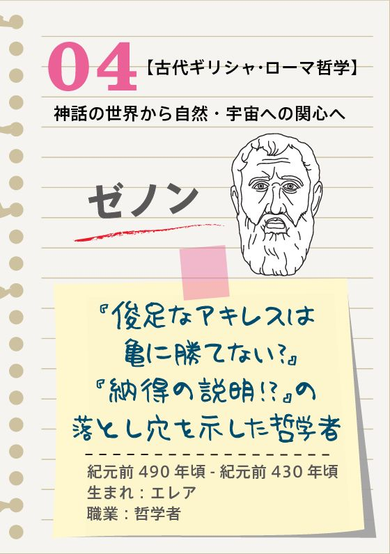
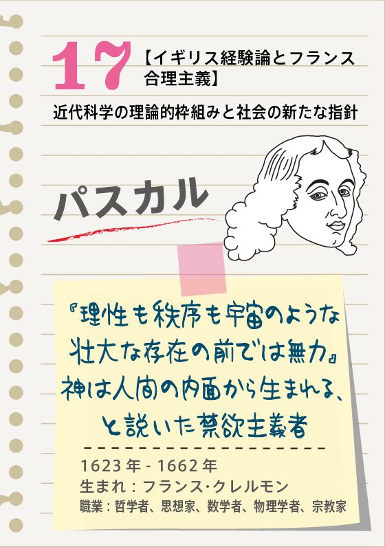
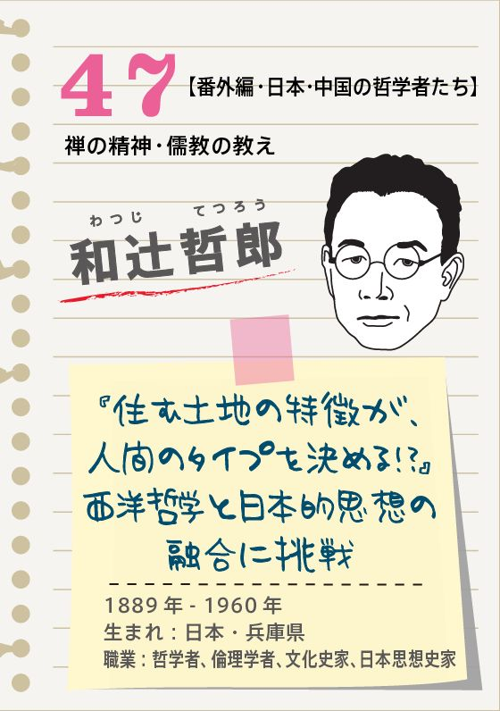

| 図解 40字でわかる 哲学 | |
| United Books 「哲学」編集部 | |
| (2017) | |
図解 「40字」でわかる 哲学
目次
【古代ギリシャ・ローマ哲学】
神話の世界から自然・宇宙への関心へ
【ソクラテス以後】
西洋思想の礎を築く
【中世・スコラ哲学】
教会や大学で形成された論理的思考
【イギリス経験論とフランス合理主義】
近代科学の理論的枠組みと社会の新たな指針
【フランス啓蒙思想】
大衆の意識を拓き、自然回帰を提唱
【ドイツ観念論とイギリス自由主義】
理想が現実を支配する世界
【現代思想の礎～熟成期へ】
「全体主義」への批判・科学への懐疑
【番外編・日本・中国の哲学者たち】
禅の精神・儒教の教え
歴史学、数学、物理学、など、多くの学問領域は「歴史」や「数学」、「物理」について学ぶ（あるいは研究する）というものだ。それでは哲学は、「何」について学び研究するものなのだろうか。その問いに答えるのは難しい。
そう、哲学には「○○を学ぶ」という明確な対象がない。あるいは、この世のすべてが対象だ、とも言える。
「哲学する」という言い方があるが、まさに哲学とは、そういうもの。つまり「哲学的にモノを考える」「哲学的アプローチで原因を追求する」といった、思考や精神の使い方を学ぶ学問なのだ。
だから、「哲学者たちの名言はありがたく引用させてもらうけれど、自分が"哲学"するなんて到底ムリ」と思わないでほしい。日々の仕事、友達関係、恋愛、結婚、ショッピングなどあらゆる行為を「哲学的思考」で見直してみると、日常の情景ががらりと変わること間違いない。
しかし、具体的にはどうやって？ 簡単にいってしまえば、すべての事象に対し、いったん疑いの目を向けよう。「なぜそうなっているのだろう」という視点からアプローチすることが哲学の入り口だ。
そんなことを毎日、一つひとつに対してやっていたら疲れちゃう......というあなた、あきらめる前にまずは本書で過去の哲人たちのアプローチを参考にしてみてはいかがだろうか。偉大な思想家・哲学者と言われた人物たちも、ずいぶんと試行錯誤を繰り返してきたことに気づくだろう。
そしてやがては、彼らの提示する哲学に対して、「本当かな？」と疑い始めるかもしれない。そうなったら、そろそろ哲学的思考が身についたころだ。哲学的な思考の仕方を運用すれば、きっと今抱えている悩みや問題が、ささいなことに思えてくるはずだ。
タレスは、記録に残る最古の哲学者だ。古代ギリシャの「ギリシャ七賢人」のひとりとされる。
古代ギリシャ哲学はその対象の違いにより、自然を対象とする「ソクラテス以前」の哲学と、主に人間を対象とする「ソクラテス後」に分けられる。タレスは前者の自然哲学者だ。
また彼は、その出身地の名称からとった「イオニア（ミレトス）学派」の創始者でもある。ミレトス学派には、他にアナクシマンドロスとアナクシメネスがいる。
タレスは「水」を万物の根源（アルケー）だと考えた。そして命を持たないはずの「水」や「土」が、どのように生きた魚や、木、花になるのかという疑問を持った。こうした疑問を持つことは、これまでの神話的思考（ミュトス）から、合理的思考（ロゴス）への転換といえ、科学の誕生に大きな影響を与えた。
タレスは、ピラミッドの高さを図ったことでも有名だ。一日のうち自分の影が身長と同じ長さになる時間帯があることに目をつけ、同時刻にピラミッドの影を図り、高さを割り出した。「ある三角形の一辺が、その外接する円の直径と同じ長さのものは直角三角形」という「ターレスの定理」でも知られる。

直角三角形の3辺の長さの関係を表す「三平方の定理＝ピタゴラスの定理」と聞いて、知らない人はほとんどいないだろう。この定理を考え出したピタゴラスは、数学者にして哲学者、また音楽にも通じ、さらには宗教家としての面も持ち合わせていた。
ピタゴラスの思想の土台をなすのは、物事の根源は「数」だとする考え方だ。たとえば「男を3、女を2とした場合、結婚を象徴するのはその和である5」といった具合。
音楽の分野では、世界最初の音律とされる「ピタゴラス音律」を発見した。楽器の弦の長さと音の間に数学的法則性を見出し、1オクターブを12の音階に分けたのだ。ピタゴラスは、鍛冶屋の金づちの音を聞いて、このヒントを得たとされる。
また一方では、輪廻転生を説き「ピタゴラス教団」という宗教結社を創設。均整と調和を理念とし、これらが広く宇宙全体を支配すると考えた。教団の本拠地では、団員たちは宗教だけでなく幾何学、算術、天文学、音楽などの研究を行っていたようだ。また、男女共学の学校を開校し「男女均等」の考え方を実践したという。
ピタゴラスは、多岐にわたる科学的知見や深い教養とともに、人々をひきつけてやまないカリスマ性も備える、当時のオピニンリーダーだったと考えられる。
デモクリトス以前の哲学・自然科学においては、「すべての存在は法則に従って進化し続けるという考え方」と、その反対に、「存在とは決して変化しないもの」、という2つの考え方が主流となっていた。後者をさらに進化させ、「存在の問題」に切りこんでいったのがデモクリトスだ。
彼は「究極の存在」を説いた。物質をどんどん分割していくと、最後にはそれ以上分割できない粒となるという主張だ。
2人はエデンの園でヤハウェと親しい交わりを持ちながら暮らしていくはずだった。また彼らの生活は、園のどの木の実を食べてもよいなど経済的に祝福されたものであった。
おもちゃのブロックを思い浮かべて欲しい。これと同様、世の中のすべての物質は、個々のパーツをさまざまに組み合わせることで出来あがっていると考えたのだ。これが今日の「原子論」のもととなっている。
デモクリトスの理論のもうひとつの特徴は、人の精神や意図、「魂」といった、いわゆる目に見えない漠然とした存在を否定したことだ。このことから、デモクリトスは「唯物論者」と呼ばれた。
なお彼はこの考えに基づき「人間も死んだらみな同じ"粒"になってしまう。生きているうちに生活を謳歌しよう！」と唱え、自ら実践したといわれる。

「アキレスは亀を追い抜けない」という有名なパラドクスを一度は聞いたことがあるだろう。これはゼノンによる。小刻みに分けられた時間が無限に繰り返されると永遠となる、という当時の人々の思い込みをついたものだ。
パラドクスの概要はこうだ。
足の速いアキレスと亀が、競走をすることになった。そこで公正を期すため、亀はあらかじめ先に進んだ地点Aからスタートすることにした。
アキレスがAに到着した時、亀はアキレスがAに着くまでの時間の分だけ先に進んでいる。アキレスが次の地点Bに着いたときには、亀はまたその時間分だけ先に進む。これが永遠に繰り返される。......すると、アキレスが亀を追い抜くことは永遠にできないということに......？
しかし冷静に考えれば、そんなはずがないのはすぐにわかる。このパラドクスから見えてくるのは、「論証の過程ばかりに目をうばわれていると、全体像を見失い、思わぬ誤った方向に進み、迷宮に入り込みかねない」ということ。哀しいかな、これは人間の特性ともいえそうだ。
その特性を理解しておけば、人生で失敗やつまずきに対処するときにも手助けになるだろう。目先のことで頭がいっぱいになってしまったときには、案外一歩引いて見てみることで、解決策が見いだせるかもしれない。
古代のギリシア哲学は「ソクラテス以前」と「ソクラテス後」で分けることができる。このことからも、ソクラテスは哲学史においてエポックメイキングな存在だといえるだろう。
ソクラテス以前の哲学者たちの関心は「自然の成り立ちや営み」だった。これに対しソクラテスの最大の関心は「人間」。人にとって、何が最も大切なのかを一生涯考え続けた。
その概念を端的に表すものとして彼は「無知の知」を説いた。真の知への探求は、まず自分が無知であることを知ることから始まるという考えだ。
ソクラテスは著作を残さなかったが、彼の考えは多くの弟子たちが語り継いだ。ただし、「子弟関係」を重視する必要はないとし、貧富の差別なくどんな人とも「対話」した。
無知を指摘された人々やその関係者から憎まれたためもあって、彼は公開裁判にかけられ、最期は死刑に処せられた。死刑にあたっては、逃げるチャンスはいくらでもあったのに、あえて逃げなかったという逸話も伝えられている。
名言も多く残した。「悪法も法なり」（たとえ悪法だとされる法も、それを受け入れなければならない）、結婚についての「汝が良妻を持てば幸福者にならん。悪妻を持てば哲学者にならん」（あなたの妻が良妻であればあなたは幸福になるだろう、悪妻なら哲学者になれる）、「結婚してもしなくてもいずれにしても後悔するだろう」などは、一度は耳にしたことがあるだろう。
ソクラテスの一番弟子で、西洋哲学の礎を築いた人物である。
プラトンの哲学で特に有名なのは「イデア論」だ。イデア論を分かりやすく説明しよう。
たとえば、あなたは自分の好きな俳優やタレントを、テレビや雑誌でしょっちゅう見ているだろう。あるいは携帯電話の待ち受け画面に設定しているかもしれない。だがもちろん、あなたが目にする画像や映像は彼・彼女の実体ではない。「本物」は別に存在する。
ラトンの言う「イデア」とはこの本物（真実）のこと。上の例でいうなら、画像や映像の「もと」であ俳優やタレント自身だ。さらにプラトンは、この「イデア」は我々の住む地上ではなく天界にある、と説いた。
また、イデアへの憧れを「エロス」という言葉で表し、「自分より高いもの、自分に欠けるものを求める衝動がエロスである」と述べている。
プラトンはソクラテスと異なり、多数の著作を残した。その多くはソクラテスの哲学を著したものだとされている。最も有名なのが、『ソクラテスの弁明』」だ。
この著作で説いているのは「人間にとって何よりも大切なのは魂である」ということ。そして「人間の根本である"魂"や"生命"をおろそかにし、他のつまらないことばかり大事にしている人々を、彼（ソクラテス）は"無知の人間"と呼んだ。自らの無知をあからさまに指摘された人々は、当然怒ったが、それでも彼は世間に迎合することなく、自らの信念のまま死んでいったのだ...」と述べている。
またプラトンは現在の大学のもととなった「アカデメイア」と呼ばれる哲学の学校を開いた。これにならい、その後ヨーロッパで多くの「アカデミー」が作られた。「アカデミック」という語はここからきている。
プラトンの弟子にあたり、アカデメイア（＝プラトンの開いた哲学の学校）で学んだ。ソクラテス、プラトンにつぐ偉大な哲学者だ。また、その関心は多岐にわたり「自然科学者」の側面も備えている。
アリストテレスは、プラトンの考え方を真っ向から否定している。プラトンが「物質の本質が現世界でなくイデア界にある」としたのに対し、「物質の本質は、他でもない物質の中に内在する」と説いた。
「机」という個物を例にとり、プラトンとアリストテレスが論じたとするとこうなる。
机の見かけについての認識は、プラトンとアリストテレスで変わらない。しかし机そのもの（本質）については、プラトンは天上の「イデア界」にあるとした。一方アリストテレスは「机は木材という物質で出来ている」と考えた。
つまりプラトンが重視したのは「感覚や精神」だった。これに対しアリストテレスは「自然界の生物や植物など」に目を向けたのだ。
彼の最大の業績は「論理学」の体系を築いたことだろう。アリストテレスは「演繹法」の、もととなる論証法を用いた。たとえば、すべての人間は死ぬ（大前提）→ソクラテスは人間である（小前提）→ソクラテスは死ぬ（結論）という三段論法だ。
アリストテレスはまた、人間を社会のなかで生きる「ポリス的動物」と呼んだ。ポリスとは、当時のギリシャの「都市国家」を指す。
多くの著作を残したことでも知られる。これらは「論理学」、「自然学」、「動物誌」「形而上学」、「倫理学」、「政治学」、「文学」などの講義用テキストとして書かれたものだ。アリストテレスが"万学の祖"といわれる所以だ。

ローマ帝国でキリスト教がようやく国教と認められたのは、4世紀後半。ただ、そのころはキリスト教のなかでもさまざまな会派が乱立し、互いが自分たちの主張を曲げず、対立が生じていた。
アウグスティヌスはこうした状況に「唯一絶対の神」の存在を説くことで一石を投じた。そして、当時のキリスト教界の共通認識だった「人間は善悪を区別することが可能」に全面的に異を唱えた。
彼は「人間は神の愛とゆるしなくして、救われない」と主張。「善と悪を自ら区別して正しいことしか行わないことなど、人には不可能。欲望に負けたり約束を守れなかったりする罪深い自分を認め、神の慈悲と大きな愛に委ね、それにより救われる道を選ぶべき」と説いた。
同時に彼は『告白』という著作を出版。そのなかで自分の弱い部分を隠さず書き綴った。同著によると、彼は若い頃、盗みを働いたり、情欲に溺れて周囲を悲しませたりといった生活を送っていたようだ。
執筆当時は聖職者になっていた彼は、「放蕩者でも、自らの罪を認めてすべて神にゆだねれば必ず救われる」ということを言いたかったのだ。このような、ある意味、体当たり的なアピールが、キリスト教界をまとめあげ、後世に続くキリスト教の土台を作ることにつながった。
こうした主張のすべてを納得するのは難しいが、彼の行った「弱さの棚卸し」は、現代を生きる私たちにとっても自身を見つめ直す方法になるかもしれない。
たとえば医学が目的とするのは、難病を治療・根絶したり、新薬を生みだすことだろう。法学なら法律を使って世の中の仕組みをより良くすること、天文物理学や地質学なら、宇宙や地球の成り立ちを解明すること......など、一般に学問は目指したい目標がある程度明確なものだ。
では哲学はどうだろう。何のための学問で、そのめざすところは何なのか？
まずその歴史をさかのぼれば、じつは哲学的な思考は「なんとなく、どこにでも自然にあった」ものだ。紀元前6世紀ごろのインド、漢の時代の中国においては、仏教や儒教というかたちで「正しいこと」「本当のこと」を明確にしようという思考が働いていた。つまり哲学における「原理の追求」だ。
やがて交通や通信の発達により、ヨーロッパ各地で人々の交流が盛んになる。それにつれて、社会は複雑化し、さまざまな困難や矛盾が顕在化してきた。絶えない戦争、資本経済の発展により広がる貧富の格差......etc。
人々はその解決策を探すため、必然的に「思考の枠組み」をより強く求めるようになった。こうして哲学者が登場する。彼らの役割は、問題の解決策、そして「思考の枠組み」を専門に考察することだ。
現代社会に生きる私たちは「人類は皆平等」「自由とは人に迷惑をかけない範囲で好きなことができる状態」などといったことを常識として認識している。これらも長年の哲学的アプローチの積み重ねのうえで構築された「哲学的枠組み」だ。
哲学には「人々の生きる道や世界のベストな状態」をめざす学問という側面がある。人類発祥から同時多発的に「なんとなく」始まった哲学。だがこの世界に解決すべき課題がなくならない限り、哲学は「めざすところ」にたどり着くことはできない。

12～13世紀ごろまで、キリスト教を信ずる人々にとって「神」は絶対の存在だった。深い信仰心こそ真の幸せにつながると考えられていた。
しかしにわかに神学者と哲学者の間で対立が生じることとなる。紀元前の哲学者で、「万学の祖」といわれるアリストテレスの著作が、十字軍遠征をきっかけとしてキリスト教圏に入ってきたからだ。
アリストテレスは「論理的・理性的」な哲学体系を示した人物である。彼の著作を読み、影響を受けた当時の哲学者たちは「神の存在を前提とした理論は成り立たない」と主張するようになった。
これに対し神学者は「神への冒涜」と反論した。さらには「神学と哲学、2つの真理が共存してもよい」という「二重真理説」を唱える人々まで出てきた。
そこへ彗星のごとく登場したのが、トマス・アクィナス。大学では神学を専攻し、『神学大全』を書き続けた彼は、言ってみれば「神学側」の人物だ。一方で、理性的なアリストテレス哲学も学んでいた。
彼が試みたのは、哲学とキリスト教神学の統合だ。だがそこには、哲学サイドに押され"劣勢"気味の神学サイドを盛り返そうという意図も働いていた。
まず彼は「神学で答えの得られる真理は、哲学が理性によって到達できる真理の範囲の上に位置する」と説く。そしてこの主張を成り立たせるため、「始まりは何だった？」と哲学者たちにひたすら問いかけた。哲学者たちを追い詰め、次々と論破していったのだ。
こうして「神＝理性を超えた（上に位置する）領域」という認識を浸透させてしまった。トマス・アクィナスは実は、かなりの策士だったのかもしれない。
ルネサンスの時代にヨーロッパで宗教改革をもたらし、現在のキリスト教「プロテスタント」の土台を作った。ルターを「宗教家」として記憶している人も多いだろう。ただ彼は「哲学的アプローチ」によって宗教を変えた人物でもあった。
ルターはキリスト教の司祭でありながら、その最高権威であるローマ教会のやり方に一矢を放った。
彼が行ったのは、ローマ教会の方針への問題提起。人々が罪を告白した後に聖職者からもらう「贖宥状」（免罪符）を販売し、「儲け主義」に走っていたことなどに関する、公開質問状を突きつけたのだ。
この後キリスト教は「カトリック」と「プロテスタント」の二分派に分かれるという大組織改革に至る。
つまりルターは、既存の事実をあえて「未解決の課題」ととらえ直し、疑問を投げかけたのだ。世の中で「よし」とされている考え方に対して発想の転換を図り、人々に多大な影響を与えた。
これはいわば「すべてを"仮定"とし、さまざまな角度から改めて考察する」という、哲学的思考法だ。宗教改革という歴史上の一大事も、非常にシンプルな哲学的アプローチから始まったのだ。
17世紀のデカルトやパスカルにも多大な影響を与えた、ルネサンス期を生きた哲学者だ。
当時のヨーロッパは、ルターがときのローマ教会に投げかけた波紋に端を発した宗教戦争により、混乱をきたしていた。そうした状況にあって彼は、どんな宗教観にも世相にも影響を受けることがなかった。そして現実の人間を観察し、自由な発想による人生哲学を導き出した。
彼は、そうした一連の思想を著書『エセー』に残している。
同著には、「多くの多様性と柔軟性をもった精神こそ"美しい精神"といえる」、「あらかじめ決められた"運命"などない。人は自分の好きなように運命を作ることができる」などとある。時代や世間の空気を読んでばかりで、それらに振り回されがちな私たちには、身につまされる言葉だ。
職業観についても興味深い発言をしている。いわく、「職業はお芝居のようなもの。白粉を塗り演じていればよい」というものだ。
モンテーニュの残した言葉は、遠く現代の私たちの生き方にも示唆を与えてくれる。
フランシス・ベーコンは、真理を「帰納法」によって追求しようとした。それは、複数の実験結果や事実の積み重ねの中から、一定の法則や共通項を見出して結論とする方法だ。
そのための姿勢として、偏見にとらわれることなく、視野を広くもってあらゆる事象にあたるべし、と説いている。
著書『ノヴム・オルガヌム』では、私たちが陥りやすい偏見や先入観をを「イドラ」と呼び、4種類の「イドラ」を挙げた（下図）。
ベーコンの残した有名な言葉に「知は力なり」がある。人間は、経験から得た知識を使えば、自然さえも支配できるという意味だ。
ベーコンは国会議員や大法官といった公職につき、立場的に人々に向けた発信力もあった。そうした背景からも、彼の思想は、その後のイギリスの科学の発展に影響を与えた。また、彼の帰納法的アプローチは「イギリス経験論」と位置付けられており、しばしば、演繹法を基盤とする「フランス合理論」と比較される。
なお、ベーコンの晩年は不幸なものだったようだ。汚職の疑いをかけられて公職から追放され、その後は隠遁生活を続けた。あるとき食肉の冷凍実験をして風邪を引き、それが原因で亡くなっている。
天動説全盛の時代に、天ではなく地球のほうが動いているとした「地動説」や、物体の重さが違っていても、落下するときの速度は同じとする「落体の法則」などで知られる。
こうした点から、ガリレオ・ガリレイは科学者としての側面がクローズアップされがちだ。しかし現在私たちが目にするガリレオのプロフィールには、必ず「哲学者」とある。数学や物理の分野にもたけた哲学者は多いが、ガリレオもその例にもれない。
ガリレオは物事を検証するにあたり、「あらかじめ仮説を立てて実験を行い、仮説に関する現象のみに注目。仮説と異なる場合はまた別の仮説を立てて実験を行う」という方法をとった。
今日の科学実験では当たり前とされる、「演繹法と帰納法」の組み合わせだ。この検証方法は、当時は画期的なものだった。近代科学発展への道筋は、ガリレオがこの方法でつけたといえる。ガリレオが「科学の父」と呼ばれる所以だ。

これまでも多くの哲学者たちが「自然とは何か」「その原理は」といった問いに対し、試行錯誤してきた。ガリレオもまた、緻密かつシンプルな手法でこの難題に挑んだ哲学者のひとりなのだ。
ホッブズは17世紀のイギリスにおいて「社会契約説」を説いた哲学者だ。「契約」というと、中世ヨーロッパでは、臣下が領主のために誠実につとめを果たすことを意味していた。
この「契約」を、ホッブズをはじめとする思想家たちは、社会をかたちづくり、政治を司る「国家」の成立にも適用した。「社会契約説」と呼ばれる考え方だ。
それまでイギリスでは、「神が国家を作った、神に服従すべし」という考え方が浸透していた。ホッブズの唱えた「社会契約」とは、「個々人は公権力と契約を結び、これに服従する」というあり方だ。つまり「神への服従」に異を唱えるものだった。
彼は、『リバイアサン』を著し、こう述べている。「人間は、人間同士の闘いを制限するために『リバイアサン』（国家、王などの公権力）を作る。そうした存在に万人が従うことで秩序が保たれ、安全が保障される」。
「社会契約説」は、「神」というあいまいな存在を否定した極めて合理的な国家論であり、現代人の私たちにも十分理解できる。しかし一方で、当時の絶対王政、現代でいえば独裁政治を肯定するものともいえる。
哲学者と聞けばまずデカルトの名を思い浮かべる人も多いだろう。「我思う、ゆえに我あり」というフレーズはあまりにも有名だ。この言葉の意味を説明する前に、それまでの哲学の変遷を振り返る必要がある。
デカルトの生きたのは16～17世紀。哲学草創期の「信仰ありき」から、ソクラテスによる「理性重視」を経て、さらに「真理とは」を追究する時代に入っていた。
デカルトはもともと数学者だ。数学の教科書でおなじみのx軸とy軸の座標系を考案した人物でもある。
彼は原理の追求にあたり、「演繹法」という方法をとった。これは、前提をいくつも積み上げることで、論理的に結論を導き出していく論法だ。
この方法を行うにあたってとったのが、「あらゆる公理を疑う」というアプローチだった。これを繰り返し、とうとう最後に疑うべき点がなくなったときに、確実な答え＝原理がわかると考えたのだ。
やがて彼は、あらゆる公理も「本当にそうか？」と疑い出すと、別の可能性が出てくることに気づく。これではいつまでたっても、疑いがなくなることはないのではないか？ しかしあるとき、デカルトはついにひらめいた。「こうして疑っている自分は、ちゃんと存在する。これは動かしようのない確実なことじゃないか」。
これがデカルトの「我思うゆえに我あり」の意味するところ。哲学の基盤となる「原理」をついに発見したのだ。
この発想の過程で、デカルトは神についても見解を示した。人間は自分を不完全なものと考えるが、これは「完全なもの」との対比から生まれる発想だ。この完全なものが神なのではないか...というものだ。

「パスカルの定理」「パスカルの三角形」など数学分野でその名を知られ、学者としてのスタートは科学分野から出発したパスカル。同じく数学者だったこともあり、デカルトとよく比較される。このとき両者の違いとしてよく挙げられるのが「神」へのアプローチだ。
デカルトが、理性的・客観的に「神」の存在をとらえたのに対し、パスカルは神を、人間が体感的・直観的にとらえるものだと考えた。実際は、両者は親子ほど年が離れており「成熟した哲学者」として対等に論じ合う機会がどれだけあったかは定かではない。
ちなみにパスカルは、あらゆる人間的な欲望を、すべて「悪」とみなした。徹底した禁欲主義者だったようだ。これを実践するため、晩年はとくに美食や芸術的な楽しみについて自らに厳しい制限を強いた。そして生涯独身を通したという。
パスカルの「人間は考える葦である」という有名な言葉だが、これにはいろいろな解釈があるようだ。
ひとつは、人間は自然の中の弱い一生物でしかないが、考えることができる点でその他の生き物を大きく超える存在なのだ、というもの。
また、葦は風に吹かれると大きくしなってしまうことから一見ひ弱にみえるが、またもとに戻る強さも併せ持つことに着目した解釈もある。柔軟性を備え、どんな困難にも屈しない人間の芯の強さを表しているのではないかというものだ。
どちらの解釈を取るにせよ、私たちも葦のように、困難に遭おうと思考停止に陥らず、めげずに乗り切りたいものだ。

スピノザは、デカルトから大きな影響を受けた哲学者だ。デカルトといえば、人間は自由な意志である「心」と、機械的運動を行う「身体」から構成され、それぞれが独立した働きをしているとする「心身二元論」を唱えた哲学者だ。
ひとりの人間は「心」と「身体」という2つの異なるもので構成されている。ただ、両者がどのように、なぜつながっているかは解決すべき課題となっていた。この難問に挑んだのが、スピノザだった。
スピノザは、心身の存在の前提として「神の働きのみがある」と説いた。この世のすべてのおおもとが神であり、あらゆる事象はその属性であるという主張だ。つまり、神というただひとつの原理によって、世界は動いていると考えたのだ。
よく、コツを覚えたら上達した、コツさえ飲み込めば二度と忘れない、といった言い方をする。この場合「コツ」は「原理」と言い換えることもできるが、スピノザの考え方も似たようなもの。ひとつの原理さえ分かれば、他すべても理解可能だと主張したのだ。
こうした、世界はひとつの神が作っているとの主張から、スピノザは「汎神論者」と呼ばれた。
著書『エチカ』（倫理）では、元々数学者だった彼らしく、定義や公理を示し、後に定理（命題）とその証明、帰結が展開される形式をとっているのが特徴。
ロックの思想の根底に流れるのは「タブラ・ラサ」だ。これはラテン語で「磨いた板」。「人の心はもともと白紙であり、感覚や認知など、個々が自身の経験によって埋めていく」という意味で使う。
当時はたとえ宗教が異なっていてもまず神ありき、人間の心の世界を形作るのは神であると考えられていた時代。ロックの唱える「人間は自分の力で自分の世界を切り開ける」ともいえる主張は、かなり画期的なものだった。
彼は「世界像」という言葉を使ってこの「タブラ・ラサ」を説明した。最初は親や大人から示された世界像が絶対だが、やがて書物などから知識を得れば、新たな世界像が上書きされる。さらには別の世界像に触れ、それまでの認識を翻す場合もある......という考え方だ。
「世界像」は、今の言葉では「価値観」と置き換えることもできよう。タブラ・ラサを「個々の違いを認め、固定観念にとらわれない姿勢」ととらえれば、現代社会でも通じる概念ではないだろうか。
またロックは私的所有権や、信仰の自由、思想や表現の自由など、市民社会の仕組みの原理を考え出したことでも知られる。ロックの考え方は、アメリカ独立宣言やフランスの人権宣言にも大きな影響を与えた。
柔軟な心、既存の価値観を打ち崩すことをいとわない姿勢。ロック的人生哲学は、私たちの生き方への、大きなヒントになりそうだ。
リンゴが落ちることにヒントを得て「万有引力の法則」を発見したことで余りにも有名なニュートン。今日では「科学者」と認識されている。
事実、光学、数学、力学など広範囲にわたる科学的業績を残している。物体の運動を記述し、決定するための方程式「運動方程式」、高温の個体が冷却される様子を表す「ニュートンの冷却の法則」、光のスペクトル分析、グレゴリー式望遠鏡の製作などだ。
「我、仮説を作らず」の彼の言葉どおり、これらの業績は徹底的な実験観察に基づいたもので、近代物理学にも大きな影響を与えた。
とくに力学分野の業績は著書『自然哲学の数学的原理』（通称『プリンキピア』）に記されている。著書名からも分かるように、彼自身は自分を「自然哲学者」と認識していた。
そのころは「科学」や「科学者」という概念が明確化されていなかったという背景もあるが、ニュートンに限らず当時の多くの学者たちは「世界の原理とは何か」を解明したいという素朴な欲求に突き動かされて探求を続けていた。
ニュートンは後半生では「錬金術」の研究に力を注いだ。いまでは冷笑されそうなこの取り組みも、原理解明への素朴な欲求の延長にあったのだろう。
哲学は、思いこみを一切捨て、直感やひらめきを信じてとことん追求する行為でもある。ニュートンの試行錯誤も、またその結果も、まさにこの哲学的姿勢によるものなのだ。
世界の裏側で、政治や経済を操作する陰謀組織。これが大半の日本人にとっての「フリーメーソン」に対する認識ではないだろうか。実はこのフリーメーソン、多くの哲学者たちがメンバーとして名を連ねてきたとされている。
フリーメーソンの起源には「中世の石工職人たちの組合だった」、「貴族や博士、知識人などによる友愛団体が発端」など諸説ある。誰かが野望を抱いて結成したというよりは、自然発生的にできた団体のようだ。
現在では、ヨーロッパをはじめ、ソ連、アメリカ、アジア、アフリカなど全世界にメンバーが広がっており、会員数は600万人以上と言われている。
また一般に欧米などでは、一定の政治団体や宗教にとらわれず、思想的な自由や博愛を掲げる進歩的友愛団体と認識されている。
ここで注目したいのがフリーメーソンの「思想」。どんな人々が土台を築いたのだろうか。
フリーメーソンが発足し、活動を活発化させた中世ヨーロッパにおいて、知識人といえば「哲学者」だった。つまり、メンバーには哲学者が多くいた可能性が高い。実際「カントは最も重要なフリーメーソンのメンバー」とする資料もある。他にもメンバーとされている人々のなかには、後のフランス革命勃発の立て役者ルソー、三権分立を提唱したモンテスキューなど、政治の在りように大きな影響を与えた哲学者も多い。
哲学者たちは、思いもよらぬ発想力と思考力で世の中をとらえ直し、その発言により人々に影響を与える。そうしたアプローチで、フリーメーソンから世界の潮流に影響を与えたであろうことは、想像に難くない。
18世紀のフランスにおいて、万人に通じる世の中の仕組みとしての「自由」に真っ向から向き合ったのがモンテスキュー。「自由」のなんたるかを現代にも通じる論理で明確に提示した哲学者であり、政治学者だ。
モンテスキューは自由をとくに「政治的自由」と呼び、『法の精神』という著書を通じて自論をを展開した。
「政治的自由」を説明するにあたり、彼はまず「政治的自由ではない」2つの自由を明確に示した。
そのひとつが、規則や多くの暗黙のルールが存在する環境でのわずかな自由。もうひとつは、なんの規制もなく、好き放題にふるまえる自由だ。
さらに「政治的自由」を実現するものとして2つの条件を挙げた。ひとつ目が立法権、司法権、行政権の分離独立を説いた「統治権力の分立」。いわずもがな、現代に通じる三権分立だ。もうひとつは法制度のあり方を説いた「適切な民法と刑法の制定」だった。
果して、これら三権分立のもととなった考え方は、後にアメリカ合衆国憲法やフランス人権宣言にも取り入れられた。
モンテスキューは、現代の私たちが当たり前に享受する、「自由な」社会の土台を築いたのだ。

フランス革命の導線となった啓蒙思想家は3人いる。その代表的存在はモンテスキューだが、その次に重要な位置を占めるのがこのヴォルテールだといえよう。ルソーがそのあとに続く。
啓蒙思想とは、文字通り「蒙き」を「啓く」ことだ。理性によって「不合理」に光を当て、これを改めるという意味がある。
ヴォルテールは、当時多大な権力を持っていた国王や教会の在り方が、まさに「不合理」な存在だと考えた。彼は著書『寛容論』のなかで、信仰や言論の自由を説いた。「あなたの意見には賛成しかねるが、意見を言う権利は守ろう」という有名な言葉は、実際にヴォルテールが語ったものかは別として、彼の思想を端的に表している。
また彼は、プロイセン国王フリードリヒ2世に招かれ、啓蒙思想論を展開。フリードリヒ2世は、大いに影響を受け、著書『反マキャベリ論』のなかで「君主は国民の下僕でなければならない」と主張した。
これは、「目的のために手段を選ばず」で知られるイタリアの思想家、マキャベリの著書『君主論』の内容を批判するもの。ただこの主張は同著の誤った解釈によるようだ。さらにこの言葉自体は、ヴォルテールが吹き込んだものとも言われている。
ルソーは「人間は本来、助け合って生きていくもの。なまじ文明や国家といった社会的枠組みがあるために、人々は憎しみ合い、戦争や殺し合いが起こるのだ」と説いた。
ルソーが生きたのは、革命前夜のフランス。彼の国家観は、さらに「国家は必ずなくてはならないものでも、絶対的なものでもない。もし現在の国家が人々を不幸にしているのだとしたら、そんなものは解体して、人々の手でもっと民衆のためになる国家を作ればよいのだ」と続く。
人民が王侯貴族による税金の無駄遣いで苦しい生活を強いられていた当時のフランス。「自分たちを苦しめる国家などなくていい」というルソーのこの考え方は、やがて民衆に受け入れられ、フランス革命へと広がったのだ。
またルソーは、『エミール』という教育論でも知られる。この本は、理論やデータが並ぶ一般的な専門書と異なり、「エミール」という子どもが教師との関わりで成長していく様を物語形式でつづったものだ。読みやすく、現代にも通じる内容でもあることから、いまでも大学の教育学の授業の副読本などで使われている。
ところでルソーは、実生活ではかなり「残念な人」だったようだ。婦女子の前で臀部をさらけだしたり、愛人との間に作った子どもの子育てをことごとく放棄したり。
ただ世間的には"ダメダメ"であっても、国や教育のありようについて、現代にも通じる進歩的思想を浸透させた功績は大きい。
カント以前の哲学は、万物共通の「原理」があり、それを客観的・合理的に解明することができるとする「合理論」と、いま見えている世界は主観的なもので、見る人自身が作り出したものと考える「経験論」に二分していた。カントはこの2論の上をいく新たな思想を構築した哲学者だ。
もともと「合理論」派だったカントだが、「経験論」の登場に衝撃を受ける。「経験論」は、科学的に証明されているものも含め、すべてに疑いの目を向け、徹底的に探求し続ける。そして、あらゆる知識や概念は、人間の経験により作り出されたもの、と説く。
カントが最初に試みたのは、「経験論」の懐疑の姿勢に、さらなる懐疑の目を向けることだった。
さらに「では、誰もが客観的に理解できる学問が存在するのはなぜか」と考えた。そして別の観点から「立場や環境の違う生物が、同じものを同じように認識できるか」と考察した。
こうした考察を経て、カントが出したのは「真理には○○にとっての真理といえるものしかない」という結論だ。
人間は、鳥や犬の認知は分かり得ないし、鳥や犬が人間と同じように認識できるわけでもない。だから、万物共通の原理などない、という考えだ。これをカントは、「人間の認識は、物自体に到達することは不可能」と表現した。
カントの思想はいわば「合理論」と「経験論」を統合したものだ。この新たな思想体系の登場は、哲学史におけるひとつの分岐点になった。
ベンサムは「功利主義」の創始者。「功利主義」とは、最大限多くの人の意見を取り入れることにより、最小限の苦痛で最大限の幸福を得る、という思想だ。善悪や人間の幸福の基準を、ひとえに世俗的な価値観によって決定する。
最大の特徴は、宗教的倫理にまったく価値を置かない点だ。根底には、「人間は快楽を追求し、苦痛からは逃げようとする本質を備えている」との考え方がある。
当時はすでに議会制民主主義が始まっていたが、実質的には、依然として旧勢力が力を持っていた。彼が「最大多数の意見を取り入れるべき」と考えた背景にはこうした状況があった。
ベンサムは、リアルタイムで進行中の現実の社会に対しての働きかけも行なった。議会制度改革や民主主義的な政治改革を訴えるなど、社会改革の牽引役となったのだ。
ベンサムは、抽象的思索をめぐらすだけにとどまらない、「行動する」哲学者だった。この功利主義の考え方は、19世紀イギリスの自由主義改革運動にも大きな影響を与えた。
ちなみに日本語訳の「功利＝巧みに利益を得る」を文字通りとらえると、姑息でずるいイメージが浮かんでしまう。そのため、｢公益主義｣などの言い替えも提案されているようだ。
ベンサムの「功利主義」を発展させたジョージ・ミルの息子で、政治哲学者としての実績が注目に値する。
著書にはその名も『功利主義』や、『自由論』、『女性の解放』などがある。なかで『自由論』は、明治時代の日本において『自由之理』という題で訳され、有名になった。
ただし同著は、これから民主主義社会を構築しようとする時代の日本人にとって、いささか先んじた内容だったようだ。なぜなら、同著は民主主義が当たり前になった社会における「個人の自由」について言及するものだったからだ。
ミルは『自由論』のなかで、「その人の欲求や感情が他人より強く多様だとしたら、その人が人間性の素材を豊富にもっているということ。何かを欲する衝動が強いというのは、活力があるということ」という主旨のことを述べており、個人の自由を強く主張している。
また、「自由とは個人の発展に必要不可欠なもの」という前提で「危害の原理」を展開した。端的にいうと、「人に迷惑をかけなければ何をしてもよい」式の発想だ。これを曲解すれば、非合法薬物の使用なども含まれることになり、喧々諤々の議論の種になる思想ともいえる。
J.S.ミルは、「自由とは何か」という、身近で大きなテーマを投げかけた哲学者なのだ。
ヘーゲルは弁証法を用いて「真理」の追究を試みた哲学者だ。彼はこのアプローチにより「近代哲学を完成させた」と言われる。
ヘーゲルが提唱した弁証法的哲学手法というのはこうだ。
①物事の核心にたどり着くには「時間」が必要。この「時間」のなかで、ある命題を立てる(テーゼ)。②それを否定する別の命題を立てる（アンチテーゼ）。③両者の矛盾を包括したより高い見識を導き出す（ジンテーゼ）。
物事はこのように、さまざまな解釈や経験を積み重ねていくことで、求める「真理」に徐々に近づいていく......というのだ。
彼がとくに重点をおいたのが、「物事は社会とつながって初めて、その真価がわかる」という考え方だ。たとえば、「猛勉強している」、「画期的なアプリケーションを開発した」という行為は、自分だけが知っていても意味がない。発信し、他者による評価や批評にさらされて初めて自分の本当の実力や、業界でのニーズが分かる。
「社会とつながることの大切さ」を説いたヘーゲルの思想は、自己が設定した限界や殻を捨て去り、広い視野をもって外の世界に果敢に挑戦すべし、というメッセージにも感じられないだろうか。
20世紀前半に登場した、「生の哲学」の先駆者だ。生の哲学は、非合理的な存在である人間そのものへのアプローチを最優先する。
実験の積み重ねを重視する「実証主義」や、経済や科学技術など実質的な事柄を重視する「唯物論」の対極にある思想といえよう。彼は合理的、客観的、効率優先の考え方に徹底的に反発したのだ。
その言わんとするところは、簡単にいえば「自分がいて世界がある。自分がなければ世界に意味はない」というものだ。これは、宇宙の原則と個々人は同一であるとする古代インド哲学の「梵我一如」に通じるものだといわれる。事実、ショーペンハウアーは、インド哲学を学び、大きな影響を受けて、自身の思想を発展させていったようだ。
ただ、彼のもっとも知られている発言は「この世界は考え得る最悪の世界である」。世界の有り様に対しては、悲観的だったようだ。このことから彼の哲学は「厭世哲学」などと言われている。
マルクスといえば『資本論』の著者と誰もが知る、あまりに有名な経済学者であり、哲学者だ。
しかし哲学については「哲学者たちは世界をさまざまに解釈してきただけだ。大切なのは世界を変えることだ」と一刀両断にしている。これを裏付けるように、彼は哲学者というより、むしろ経済学者としての存在感を示した。その影響力たるや「資本主義の否定と共産主義思想の提唱」をもって、多大なものだった。
『資本論』のなかでマルクスは、資本主義の経済活動を注意深く観察し、「資本家」と「労働者」の2つの階級があることを指摘。両者の間に生じている経済格差を問題視した。そして「このシステムはいつか崩壊する」と「資本主義」を全否定した。
その解決策として示したのが「共産主義思想」である。「国家がすべての財産を管理し、人々に平等に分配する」という、資本主義の対極にある考え方だ。
ただ、この思想は多くの矛盾をはらむ。ソビエト連邦をはじめ、これを実践した多くの「共産主義国家」が相次いで破綻するに至ったのは周知の事実。マルクスは、自らが発した哲学への批判に沿うように、歴史に残る爪痕というかたちで「世界を変えた」のだ。
ちなみに、マルクスはかなりの浪費家だった。家族をもってからも、知人の金銭的援助なくしては生活が成り立たなかったという。"経済学の巨人"も、家庭の経済については目が行き届かなかったのか。
近代哲学は、ヘーゲルが提唱した「弁証法」によるアプローチで完成したと言われている。この弁証法に、もうひとつの考え方を示したのがキルケゴールだ。
弁証法は、ある考え方や事象をまず否定することで発展していくという考え方だ。彼はこれに違和感をおぼえた。
キルケゴールは考えた。弁証法に代表されるこれまでの哲学思想には、「私」個人の悩みや絶望がまったく考慮されていないのではないか。哲学とは自己の探求に目を向け、自分自身や人間をその対象とするものではないか。
そのうえで彼は「実存」（人間のあり方）という言葉を使い、人間には真理追究における3段階の実存があると説いた。
3段階のうち、ひとつめは「美的実存」だ。恋愛を成就させて幸せになりたいといった、ごく一般的な幸福を求めながらも、満足できず絶望に陥る段階。
次の段階が「倫理的実存」。高い倫理性を求め、やがて人格者になったと自分では思えても、現実には罪を犯し絶望に陥る。
3番目が「宗教的実存」で、孤独のなかで人間の限界を思い知り、ついに神の存在を受け入れた状態だ。
そして彼は、たとえ絶望に陥ったとしても人間には可能性がある。この可能性を信じ、求め続けて得られる「自分にとっての」真理こそ真理だと唱えた。
ちなみにキルケゴールは若きころ、愛してやまなかった娘レギーネとの婚約を突然、一方的に破棄したという。ある意味屈折したこの経験が、彼の哲学思想に大きな影響を与えているのではないかという見方もある。
そもそもの発端が哲学者に関わる用語で、今でも少し意味を変えて残っている言葉がある。
プラトンが古代ギリシアの時代に創設した学校。この名称は、学校のあった場所がアテナイ郊外の「アカデモスの聖林」であることが由来。

これから派生した語でアカデミーという語がある。アカデミーという語は各種養成機関や学校名に使われることもある。また、アカデミックといえば、学術的、学究的 教育機関の、という意味がある。たとえば「アカデミックパック」といえば、学生や教育に携わる人々が一般人よりも安く利用できる講座・ソフトウエアなどをいう。
ちなみにSchool「学校」も、もとは「余暇」を意味するギリシャ語だ。ここから「余暇を利用して学ぶ所」という意味に変化した。
○ポリス
ギリシャ語では都市、都市国家、市民権などを指す。古代ギリシャでは、国家というより市民集団、コミュニティぐらいの意味として使われていたようだ。発祥当初は「砦・城砦・防御に適した丘」を表した。
首都や首府、大都市などを「メトロポリス」というが、これはもともと古代ギリシャの植民地で最初に入植した都市を指した。ちなみに現在日本で地下鉄を指す「メトロ」は、発祥のイギリスではMetropolitan Railway。「都市の」の部分だけが残ったようだ。
また警察を表すpoliceは、国家を表したpolisが語源といわれる。フランスに渡ってpoliceとなり、さらに英語圏に入るとともに意味も変化したと考える説が有力。
○イデア
プラトンが用いたこの語は、もともとは「見られるもの」のこと。つまり、ものの「姿」や「形」を意味する。近世に入って、考え方、着想という、私たちが「アイディア」と聞いて思い浮かぶ意味を持つようになってきた。
○エセー
現在、意見や感想などを自由に述べた文章を指すエッセイ（essay)は、ルネサンス期のフランスを代表する哲学者モンテーニュが自らの思想を綴った『エセー』がもとになっている。大学などで出される課題「エッセイ」の場合は、特定の主題に基づく小論文や論説などを指す。
「神は死んだ」......このあまりに、大胆な言葉を残したのが、19世紀後半を生きた哲学者ニーチェ。彼はこの言葉を、自身が執筆した小説『ツァラトゥストラはかく語りき』のなかで主人公に言わしめている。
「神は死んだ」と聞いても、日頃神の存在を意識することの少ない方にはピンとこないかもしれない。当時のヨーロッパは、信仰が文化として、人々の生活に深く浸透していた。そんな彼らにとっては、天地がひっくり返るほどの衝撃的なものだったのだ。
ニーチェは、聖書にある「常に他人を優先し、すべてのものに慈愛を」というキリスト教の根幹をなす教えに注目。これを「民衆の欲望を押さえつけ、人々を無力な存在におとしめるもの」と考えた。もっといえば、ルサンチマン（弱者の強者に対する妬みの心）の裏返しととらえた。
「神は死んだ」とは、キリスト教の信仰を批判し、神の存在を否定する言葉として発言したものだったのだ。
さらにニーチェは、「信仰に忠実に、道徳的に生きることに価値はない。自らの欲望にこそ忠実に、自身のおかれている現実に向き合って生きるべき」と主張した。「人が生きること」の意味は、もっと強く、優れた存在になりたいと積極的にチャレンジし続けること。ニーチェはこう言いたかったのだ。
「モノゴトに正面から向き合い、ときに批判的な視点で見てみよう。そうすれば視界が広がる」。ニーチェの言葉をそんなふうにとらえれば、信仰の助けを借りられない現代人へのエールにも思えてくる。
さてここで、変わり種の「哲学者」を紹介しよう。
私たちはモノゴトを言葉で表す。この表現からも分かるように、言葉は「ものにラベルを付ける」式に存在するものと解釈されてきた。
これを「まず言葉ありき」と、180度転換した理論を発表したのが言語学者ソシュールだ。
リンゴやみかんは、その他の果物と区別するから初めて存在する。もし「区別」して「差異」を認識する価値観を持たなければ、リンゴもみかんも存在していない。
さらにいえば、もし宇宙の未知の生物が地球を眺めたら、木も人も動物も食物もすべて同列にみなすかもしれない。彼らには地球の事物を「区別」して「差異」を与える価値観がないかもしれないからだ。
ソシュールの理論は、このような「区別」と「差異」をキーワードにした画期的な言語学だった。
これを哲学的側面からみれば、古代ギリシャからのテーマである「存在とは？」を考察する一手段ともなる。つまり「区別」と「差異」によって提示された「価値」があって初めてモノゴトは存在する、というわけだ。
残念なことに、彼は言語学における画期的理論を、世の中に発表する前に亡くなった。今日、彼の理論は、死後弟子たちによってまとめられた『一般言語学講義』にみることができる。
ほとんどの人が精神分析医としてその名を記憶しているだろう。寝ている間に見る夢によって心の奥底を読み解く「夢分析」や、親子関係のプロセスを説明する「エディプスコンプレックス」などは発表当時、かなり画期的な内容だった。
忘れてならないのが、これらの説の大前提となる「無意識」の存在。個々の説よりも、この「無意識」を発見したことが、フロイトの真骨頂だ。20世紀思想の先鞭をつけた思想家として、「神は死んだ」のニーチェ、『資本論』のマルクスと並び称される所以だ。

「エディプスコンプレックス」の仕組みはこうだ。男の子は母親への甘えや愛情の気持ちを抱く半面、父親をライバル視し、憎悪する。しかし一方で父親を尊敬もしている。やがて男の子は自立的な男らしさを獲得し、父母との関係をルール化することでいったんの成長を終える。
「夢分析」はいわずもがな、夢には現れる人間の無意識の部分を分析することで、その人の心のありよう全体が把握できる、という考え方だ。
人は「心の赴くままの欲望」と、「自身が無意識のうちに課しているルール」を胸に抱えている。両者はときに食い違い、不具合が生じることもある。しかし「無意識」を顕在化し、あえて意識することで、不具合が解消される効果が期待できる。
現在、精神分析の分野で行われているカウンセリングや催眠療法も、フロイトの発見した「無意識」の概念をもとに考案されたものなのだ。
哲学の最重要課題は「真理」とは何か、どうとらえればよいのかということだ。これは、そこにあるはずの客観的世界と、実際に私たちが見ている主観的な世界は本当に一致しているのか？ という問いでもある。かなりの難問だ。
この真理追求の方法について、新機軸を発表したのがフッサールだ。彼は、「あらゆる現象（客観的事象）は、主観的な意識から始まっている」と説いた。
さらにフッサールは、個々人の「見えている」感覚（＝知覚直感）を"客観"と確定するには、複数人の知覚直感が共通すれば成り立つと考えた。
ただ、もし人によって知覚直感が異なるなど、判断しかねる状況が生まれたら、いったん留保することを提唱した。時間をおいてその状況を見直し、認識の誤りが発見できたら是正する。複数の知覚直感が共通点を持つまでそれを繰り返す、というわけだ。
「現象学的還元」を、日常やビジネスに置いてとらえるのも興味深い。相互で納得したことは「確定事項」「相互理解」とするが、認識が異なる場合、いったん距離や時間をおき、冷静になってみる。こうした姿勢は、円滑な関係を作り出すのに、ときに有効かもしれない。
「あのとき、あっちを選べば良かった」と後悔することがある。ある時点をAとしたとき、Bという行為を経て、今の状態に至り後悔した。そうではなく、Aの時点でCを選択すれば別の結果が得られただろう、という思いだ。
ベルクソンなら言うだろう。実際には、結果に至るまでにはありとあらゆる筋道がある。過去を振り返り、あたかも道が2通りしかなかったかのように考えるのは誤りだ......。
あったはずの「2通りの道」とは、結果をもとに、そこにあったと自分が勝手に決めたものだ。時間は、本来計測したり客観的に把握できるものではない。個々の人間が実感し、経験するものこそ時間である、というのがベルクソン流のとらえ方。歴史に「IF」はないのと同様、人間の時間にも「IF」はないのだ。
ウィトゲンシュタインは「言語」にこだわり続けた哲学者だ。その主張は大まかに分けて、前期と後期で180度異なる。
前期、彼は著書『論理的哲学論考』において、「言葉で世界をすべて語ることができる」と述べるとともに、大胆にも「哲学の諸問題は私がすべて解いた」と宣言。これで一件落着とばかりに哲学界を去り、小学校教員として今度は教育者の道を歩むこととなった。
しかし、子どもたちと接し、彼らの言葉との付き合い方を目の当たりにするうち、言葉についての認識を考え直すようになる。子どもたちは、最初見よう見まねで試行錯誤を繰り返し、言葉の正しい意味や使い方を学んでいく。これを見て彼は「言葉は意味を定義するもの、というより、その使い方に意義がある」と考えるにいたった。
こうして記したのが『哲学探究』。後期ウィトゲンシュタイン哲学の集大成だ。同著で彼は、言語の本質を「言語ゲーム」と表現した。ゲームは相手とのやりとりを楽しむもの。「命令する」「冗談を言う」などは言語を伴う相手とのやりとりだ。これを彼は「言語ゲーム」と呼び、言語の本質だと主張した。
哲学とは「真理とは何か」の答えを探す学問。「言語ゲーム」を、「真理追求」の手立てと考えるとしっくりくる。だとすれば、その追求は永遠に終わらないだろう。
なお彼は「自分を騙さないことほど難しいことはない」など、今読んでも身につまされる名言を多く残している。こうした言葉の数々を、"ゲーム"を楽しむように、実生活にあてはめてはどうだろう。
人間を「現存在」と称し、独自の哲学を展開したハイデガー。一生をかけて「存在とは何か」を問い続けた。その名を知らぬ人はいないほど、有名な哲学者だ。
存在は、既存の書物や科学的諸説によって定義されるものではない。存在そのものを解明するには、自分自身の内面を見つめることから始める必要がある、とハイデガーは主張した。
そして、人間（現存在）の「生と死」について、過去、現在、未来の各時点から思索した。いわく「明るい未来を想像して『今』を生きるのが本来のあり方。しかし多くの人は『頽落（＝腐敗、堕落）』する。これは『死への不安』があるからだ」。
彼はこれを踏まえてさらに、「いつやってくるかわからない死を恐れるのではなく、はっきりと意識して向き合ってこそ、今を真剣に生きることができるのだ」と説いた。当時は第一次大戦や世界恐慌など、世界を不安が覆った時代であった。そんな時代背景も、彼の思想に影響を与えたのだろう。
ハイデガーは大学で教鞭に立ち、自らの哲学観を実に表現力豊かに語った。多くの学生が、ハイデガーのそのカリスマ性に引きつけられたという。
だが一方では、同時代の哲学者たちから「彼の言わんとすることは何なのか？」と疑問視されることもあった。
彼にはまた「存在とは何か？」を問う『存在と時間』という著書がある。これは上下巻で刊行される予定だったが、下巻の執筆には至っていない。結局「存在の謎」は解き明かされなかった。下巻で何が解明されるはずだったのか、答えはベールに包まれている。
何年か前「自己責任」という言葉が頻繁に使われた。当時の首相が、外国の紛争地域で現地の武装勢力にとらわれた日本人ボランティアに対して言ったものだ。「誰が頼んだわけでもなく、自分の意志で危険地域に赴いてトラブルに巻き込まれたのだから、"自己責任"で解決するのが筋」......という考え方だった。
「人は自由の刑に処せられている」......サルトルの使った言葉もこれに似ているかもしれない。「人は何かをしてもしなくても、何を選んで行なっても勝手だが、結果自身の身に降り掛かることは、自分で引き受けなければならない」という主旨だ。
「自己責任」の言わんとする内容と少し違うのは、サルトルの場合、「......だから民衆よ、もし今の時代に不満を感じるなら、自らの自由な意思により立ち上がって行動すべきだ」と主張した点だ。
サルトルはこれを、パリのサン・ジェルマン通りというおしゃれな街にやってくる若者たちに語りかけた。彼らは感化され、当時、有力になりつつあったマルクス共産主義思想をターゲットに、過激な反対活動に走る。そしてこの動きは世界中に広まっていった。
一方、サルトルは、私生活では女性哲学者ボーヴォワールと「婚姻届けを出さず一緒にも住まない」という、当時としては斬新な男女関係を実践した。
既存の事象をまず自分なりの視点で観察し、奇抜な発想で行動に移す......それがサルトル的哲学スタイルなのだ。
ユダヤ人だったレヴィナスは、第二次世界大戦中、家族とともにナチスドイツから迫害を受けた経験を持つ。しかしその間も、外の世界は何事もなく過ぎていた。彼はこの事実を知って恐怖を感じ、自身とまったく無関係に存在する世界を「他者」として意識し始めた。
この恐怖を彼は、恐らく皮肉をこめて「イリヤ」（もともとは「存在する」の意）と名づけた。そして「他者」とは何かを考え、「他者」と自分との関わりを解明するという課題に取り組み始めた。哲学ではこうした取組みを特に「他者論」という。
ふつう、「他者」というと単純に「他人」という意味だが、この場合のの意味するところはもっと広い。自分にとって理解不能な論理、事象など、自分とは相容れない存在全般を指す。「他者」をどう捉えればよいか、これはレヴィナスのほとんど生涯をかけた哲学的課題だった。
ただ、必ずしもレヴィナスは「相容れない理解不能な存在」を否定していたわけではない。たとえば無人島にいたら、人は孤独と恐怖に押しつぶされてしまう。そこに他者（他人）が現れたら、どんな人物であれ救いになるだろう。また、ある理論を否定する「他者」は、新たな理論を生み出す原動力になるかもしれない。
「他者論」は、決して終わることのない推敲作業だ。哲学の永遠のテーマである「真理の追求」の、ひとつの手法と考えられよう。
どんな思想で足跡を残したかよりも、同じ哲学者サルトルと「契約婚」をし、子どもを持たずに生涯その関係を続けた「奔放な愛に生きた女性」として、また女性の自立や権利を説いた「フェミニスト」として、その名を知られるボーヴォワール。
彼女が著書『第二の性』に記した「人は女に生まれない。女になるのだ」という言葉は、一度は聞いたことがあるだろう。社会でなんとなく「女性らしさ」と言ったり感じたりしていることは、社会が勝手に定義したことであり、もともと「女性らしい」女性などいない、という意味だ。ジェンダー論の礎ともなる言葉だ。
こうした、革新的フェミニストとしての視点だけからとらえれば、「女性ならではの感性だ。それを発信できたのも同業者で理解あるパートナー・サルトルがいたからでは」と片付けることもできよう。
だが考えてみて欲しい。哲学とはそもそも、なんとなく皆が「そうあるもの」ととらえている事象をいったん凝視し、別の側面や異なるスパンでじっくり考察し直してみる作業。そういう意味からすると、ボーヴォワールは、神の存在を疑問視したり、時間と自由の関係に注目したりといった哲学者ならではのアプローチを、「女性」をテーマに実践したといえるのだ。
フーコーがフランス思想界に登場した頃、思想家たちは「人々が自由を失っている」と危惧していた。自身の意思をもって行動する自由が失われているというのだ。その原因を突き止めようという動きが活発化していた。
フーコーは、人々から自由を奪っているのは「権力」だと考えた。この「権力」を、彼は「死の権力」「生の権力」という言葉で説明した。
「死の権力」とは、絶対的な権力を持つ国王や君主が、人々を服従させている状態を指す。「命令に歯向かったものは殺す」式の、前近代的な恐怖政治に等しい。
「生の権力」は、近代的な権力のことだ。学校や会社、地域社会などには細かな規則がある。こうした、人々の生活に介入し、従うよう強制するものを指す。
単純に「殺す」か「生きたままがんじがらめにする」か。２つの権力には、現れ方に違いはある。しかしいずれも、人々が自由を失う点に変わりはない。単純に「殺す」か「生きたままがんじがらめにする」か。２つの権力には、現れ方に違いはある。しかしいずれも、人々が自由を失う点に変わりはない。とくに、現代社会に見られる「生の権利」はもろ刃の刃だ。人をしばりつけ自由をうばう一方、暮らしやすい、過ごしやすい社会を作るために作られたルールでもあるからだ。
フーコーはこの状態を「人間が終焉に向かっている」と憂いた。「社会の仕組みをもっと自由度の高いシンプルなものにすべき」。そう彼は問題提起した。これは現代の私たち、さらには次代に投げかけられた、とても難しい課題だといえよう。
しかし、知恵者ソロモンはその知恵に頼りすぎた。次第に彼は自分のやり方で国を治め、政略婚を繰り返し、なんと1000人の外国人妻や妾を抱えた。また、多くの異国の神々をイスラエルに持ちこみ、その結果、国の財政を圧迫した。
ちなみに、本欄のフーコーは「フーコーの振り子」のフーコーではない。「振り子」のほうは19世紀の物理学者、レオン・フーコーなので誤解なきよう。
デリダは、現代哲学の「ポスト構造主義」と称される思想により、これまでの哲学思想すべてに異論を唱えた超革新派。
彼はまず、西洋文明そのものを批判対象とした。いわく、西洋文化は、声をあげ、音を通じて発信する側が優位に立つ「話し言葉の文化」。話し言葉の文化では、受けとめる側が軽視されがちで、主導権が発信する側に偏るというのだ。
これに対抗するものとしてデリダは、「書き言葉の文化」を持ち出した。自分なりのペースで書かれたものを読んで、好きなように解釈すればよいというものだ。
これには、既成の概念は一つひとつつきつめていくとどれも疑わしく、「構築された認識」などない、という前提がある。こうした考え方は「脱構築」と呼ばれた。
デリダの主張は、つまるところ「理解は人によりそれぞれ。すべてに疑いの目を向け、いっそ白紙としてとらえ直し、どうしても分からなかったら、分からないままにして知らんぷりすればよい」というもの。他人の考えていることで悩んだりしない「ジコチュー」の提唱だ。
さらには、「人それぞれの理解による」という解釈に着目するならば、これは「ダイバーシティ（性差、国籍、人種、障害の有無など個人や集団同士の違い）」を認める考え方。そうとらえればデリダは、現代の求める真のコスモポリタンだったのかもしれない。
哲学者の妻＝ソクラテスの妻＝悪妻......とすぐに連想できるぐらいに有名な存在。彼女の名前はクサンティッペ。まさに悪名高き彼女だが、実はそれは作り話にもとづく誤解とも言われる。しかしたとえ作り話だったとしても、彼女の｢悪妻｣エピソードは強烈で、ソクラテスの「返し」もまた、哲学者ならではのユーモアにあふれている。
いくつか紹介しよう。
1）クサンティッペはソクラテスに対して癇癪を起こし、激しくののしった。しかしソクラテスはまったく動じない。そこであろうことか頭から水をザパーン。びしょ濡れのソクラテスは平然と言った。「雷の後は雨がつきものだ」。

2）ソクラテスは語った。「セミは幸せだ。なぜなら彼らの妻は鳴かない」(注：メスのセミは鳴かない)。
3）ソクラテスは周囲の人々に結婚をすすめたという。その理由は次のようなものだった。「良妻を持てば幸せになれる。悪妻を持てば哲学者になれる」。
4）ソクラテスに離婚をすすめた知人がいた。それに対しソクラテスが返した言葉は「この人とうまくやっていけるなら、他の誰とでもうまくやっていける」。
なお一部女性研究者の間には「ソクラテスのような男と結婚したから、彼女は悪妻になったのだ」との見方があることも付け加えておこう。
ちなみに、4月27日は悪妻の日だそうだ。これは紀元前399年4月27日、ソクラテスが、若者を堕落させた罪で処刑された日にちなんだものだとか。同じ理由で「哲学の日」でもある。しかし「悪妻の日」のほうがよく知られている気がするのは、クサンティッペの"魅力"によるものだろうか。
若いころは、近代日本や軍部に大きな影響を与えた朱子学を学び、さらに、この朱子学を批判した荻生徂徠にも啓発された。
ペリー来航を機に志をいだいてオランダ留学した際には、ミルの功利主義に強い影響を受け、人を幸福にするものは「健康、知識、富である」と説いた。彼は日本で最初の「西洋哲学者」といわれている。
また学術用語の翻訳語形成にも携わった。Philosophyを訳した「哲学」をはじめ、「理性」「意識」「概念」「帰納」「演繹」など、哲学と関係の深い多くの語も、西が作った言葉だ。
日本発の学会「明六社」の一員でもあった。明六社は、明治政府で初代文部大臣となった森有礼が、洋学者らの知識を結集して近代国家設立に役立てようと設立したものだ。そこで西は、学会発行の『明六雑誌』で西洋思想などを紹介している。
日本初の憲法作成にあたっては、最後の将軍・徳川慶喜のもと、西洋式の議会制度を盛り込んだ憲法の草案を書いた。しかし、明治政府は結局、立憲君主制をうたうドイツ流の憲法をベースにした「大日本帝国憲法」を成立させた経緯がある。
西周は、日本人の精神の近代化や近代国家設立に重要な役割を果たした。深い思索の世界にこもる「哲学者」としてより、啓蒙思想家・政治学者として残した足跡が大きい。

和辻哲郎といえば、真っ先に結びつくのが「風土」というキーワードだ。和辻は人間を、気候風土との関係性から深く考察した。アジアからヨーロッパに至る地域を自然環境に基づいて、モンスーン地帯、砂漠地帯、牧場地帯の3つに分け、そこに住む人間も類型化するというものだ。著書『風土』にその内容が記されている。
たとえば、日本を含む「モンスーン地帯」は暑熱と湿気が結合した地域。人間にとっては耐え難い気候だが、自然の恩恵は豊か。ここでは受容型・忍従型の人間が作られる。
乾燥している「砂漠地帯」は、植物は生気がなく、自然から恵みを受けることが難しい。水や自然を獲得するための戦闘が人々の間で繰り返され、対抗的・戦闘的なタイプの人間が多い。
「牧場型」の気候は湿潤と乾燥がバランスよく、自然のほうが人間に対して従順。人間は、合理的に自然を利用できる。ヨーロッパの合理精神や自然科学などはこうした風土で発展した。
風土論にみられる独特の人間観は、和辻がドイツ留学中、西洋思想に触れる機会を経て着想したようだ。
ただ、彼は西洋的個人主義については批判的だった。和辻は人間を「間柄的存在」であると説き、「人は、人との間においてのみ存在する」と主張。「和辻倫理学」と呼ばれる倫理学の体系を構築した。
このように和辻哲郎は、日本的思想と西洋哲学の融合を目指したという点で、ユニークな存在だ。
孔子の思想の根底を流れるのは「忠恕」。これは人間がもともと持っている真心や思いやりの心といった、最も基本的な「徳」を言う。孔子の思想が記された『論語』には、頻繁に「仁」という語が登場するが、忠恕を漢字一文字で表したものが「仁」という解釈もある。
ただ『論語』は孔子の著書ではなく、孔子と弟子や要人達との間で交された対話録だ。「仁」について問われた際には、その弟子に応じたバリエーションで答えており、明確な定義は行なっていない。
孔子が生を受けたのは、紀元前551年。群雄割拠の春秋戦国時代のひとつ手前の、ちょうど「周」が天下を統一し、安定した国家を築いたころだ。
孔子の言葉は、今の世を生きる日本人の私たちにも理解しやすく親しみやすいものが多い。孔子の生きた時代背景と現代の日本とで、どこかシンクロする部分があるせいかもしれない。
ちなみに40歳を指す「不惑」という語は、『論語』の「四十にして惑わず」という言葉から来ている。
孔子が静なるイメージをもって「聖人」とも言われ、「仁」を唱えたのに対し、孟子は動の印象が強く、「仁義」を唱えた。孔子に次ぐ聖人という意味で、「亜聖」ともいわれている。
その思想は、「浩然の気」という言葉に代表される。「浩然の気」とは、人間の内部にみなぎる気力や気概のことで、「道徳的勇気」とも言い替えられる。
ちなみに現在「力を加えて、物事の成長や発展を助けること」の意味で使われる「助長」という言葉は、孟子が弟子に「浩然の気」を説明する際に使ったもの。もとは、植物の成長を促すために無理に引っぱってかえってだめにしてしまう、という否定的なニュアンスだった。
孟子の思想は「性善説」の立場に立ったものだ。「人間はもともと、他人に対する思いやりや深い親愛の情をもっている」というスタンスだ。
これに基づき孟子は「主人、先輩、後輩、家来など、アカの他人にも家族同様に接し、社会のきまりごとは、自分の本能と心得よ」と説いた。
最後に、哲学者たちの遺した含蓄ある言葉をいくつか紹介しよう。
1） 生き方を考える編
「"できない言い訳"を一刀両断！」
スピノザ（1632～1677）
「自分にはできない、と思うたいていのことは、本当は『できない』のではなく『やりたくない』だけなのだ」
「やってみたい」が口癖の語学や習い事、「やんなきゃ」と思う同僚への苦言や新規企画提案......。でも「自分には能力がない、できない」と言い訳してみるものの、胸の内にあるのは小さな恐怖。それは「やりたくない」の裏返しなのかも。
「偉大なる詩人の生き方指南」
ゲーテ（1749 ～1832）
「君は本気で生きているか？」
こう問いかけられれば思うはず。「『明日にしよう』はやめて、この一瞬を精いっぱい生きよう」。
「その夢を失くして、生きてゆけるかどうかで考えてみなさい」
「夢は総理大臣」「宇宙飛行士になりたい」。あきらめてしまった子どものころの夢。でも実現した人はたくさんいるのだ。あなたにとって、夢として終わらせるわけにはいかない「夢」とは？
「ただ、ひたすら自分が正しいと思う道を歩くがよい。他人がどこを歩こうと、気にしてはいけない」
脇目もふらず「目標に向かってまっしぐら」すれば、きっと誰かが認めてくれるはず。そして、いつか光明が見えてくる。
2）男女の愛情編
「恋愛と結婚のことならお任せ」
ボーヴォワール（1632～1677）
「夫をつかまえるのは技、とどめておくのは努力」
「夫」を「彼女」や「妻」にも言い換えてみよう。やっぱり「釣った魚にえさをやる」は正しい。
「偉大なる紀元前の哲学者からもひとこと」
プラトン（B.C.427～B.C.347）
「恋をすると、ふだんは詩などに目もくれなくても、だれもが詩人になれる」
最近、感動がない、心が枯れている、と感じたら、恋愛から遠ざかっているのかも。恋愛はひとふりのスパイスであり、甘い粉砂糖のようでもあり!?
3）職場や家庭の「あるある」編
「"やってあげたのに"を一喝！」
セネカ（B.C.1～ B.C.65ごろ）
「人に施すときには、隠しなさい。でも人に施してもらった時には、言いふらしなさい」
「教えてあげたのに」「貸してあげたのに」「ごちそうしたのに」、はたまた「この親不孝者が！」。人生につきものの「～してやったのに」系のボヤキ。視点を変えれば、あなたも周りも幸せに。
「ポイントは"空気"と"時機"」
アリストテレス（B.C.384～B.C.322）
「宴会と同様、人生からも早めに立ち去るのが一番」
何ごとも時機を見極めることが成功のカギ。
「適切な相手に、適切なタイミング・方法で怒ることは簡単ではない」
子育てにも部下育成にも心得ておきたい。
参考資料
『ソフィーの世界』（日本放送出版協会）
『青木の世界史講義Bの実況中継⑤』（語学春秋社）
『史上最強の哲学入門』（マガジン・マガジン）
『知識ゼロからの哲学入門』(幻冬舎)
『哲学マップ』（筑摩書房）
日本倫理学会
http://jse.trustyweb.jp/2007/02/post_24.html
図解 「40字」でわかる 哲学
発行日 2013年1月31日
著 者 United Books「哲学」編集部
構 成 古怒田悦子
イラスト 朴大運
編集協力 野島哲史
デザイン m!nka
発行者 神澤享裕
発行所 株式会社ユナイテッド・ブックス
〒160-0016 東京都新宿区信濃町3-1
電話 03-6457-8112（編集）
Copyright 2013 United Books. All rights reserved.